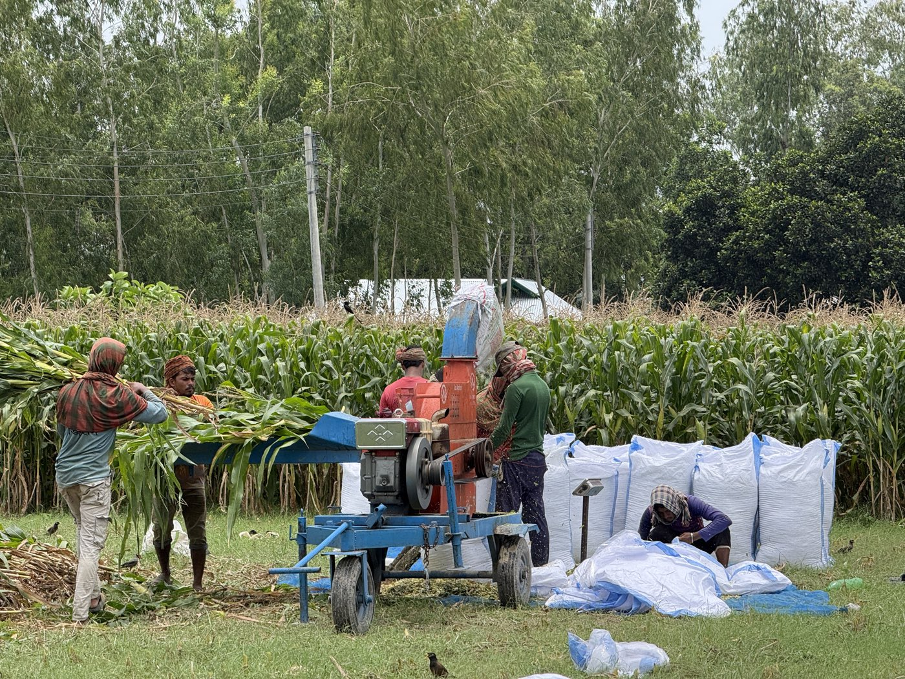

ঢাকার চারপাশ ও অন্য শহরের কাছাকাছি এলাকায় অল্প জায়গাতেও এক দুটি গাভী রাখা যায়। এই ছোট খামারের সবচেয়ে বড় চাপটা জায়গা নয়, খাবারের নিয়মিত জোগান। জমি না থাকলে প্রতিদিন ঘাস জোগাড় করা কঠিন, আর সেখানেই খামারভেস্ট সাইলেজের মতো বস্তাবন্দি খাবার কাজে আসে, কারণ দাম আগে থেকে জানা থাকে এবং বস্তায় রাখা যায় বলে ঘাসের ঘাটতির মাসেও জোগান থাকে।
জরুরি বিষয়
ছোট খামারে জাত বাছাইয়ের ভুল সবচেয়ে দামি পড়ে। আপনার এলাকায় কোন জাত ভালো চলে তা উপজেলা প্রাণিসম্পদ অফিসে জেনে নিন, আর শুরুতেই বেশি গাভী কিনবেন না।
কম জায়গায় সঠিক স্টল তৈরি করুন
একটি পূর্ণবয়স্ক দুধের গাভীর জন্য ন্যূনতম দশ ফুট প্রস্থ এবং পনের ফুট দৈর্ঘ্যের স্থান (মানে ১৫০ বর্গফুট) প্রয়োজন। দুটি গাভীর জন্য পাঁচ শতক (প্রায় ২০২ বর্গমিটার বা ২,১৮০ বর্গফুট) যথেষ্ট। এর মধ্যে রাখবেন স্টল, খাবারের স্থান, পানির ট্যাংক এবং সামান্য জায়গা দাঁড়ানোর জন্য।
জায়গা খুব কম হলে কেউ কেউ ছাদে স্টল বানান, প্লাস্টিক শিট দিয়ে তিন দিক ঘিরে বায়ু চলাচলের পথ খোলা রাখেন। ছাদে করলে আগে একজন প্রকৌশলীকে দিয়ে ছাদের ভার বহনের ক্ষমতা যাচাই করিয়ে নিন, কারণ একটি গাভীর ওজনই কয়েকশো কেজি। কংক্রিটের মেঝে হতে হবে, যাতে সহজে পরিষ্কার করতে পারেন। মেঝেতে ঢাল থাকতে হবে যাতে গোবর এবং প্রস্রাব সহজে বেরিয়ে যায়।
খরচ সাশ্রয়ী খাদ্য ব্যবস্থাপনা
ছোট খামারের বড় চ্যালেঞ্জ খাদ্যের নিয়মিত জোগান আর খরচের হিসাব। জমি না থাকলে প্রতিদিন তাজা সবুজ ঘাস কেনা কঠিন, দামও ওঠানামা করে। বস্তার সাইলেজ এখানে একটি বিকল্প: খামারভেস্ট সাইলেজের না-খোলা এয়ারটাইট বস্তা ফ্রিজ ছাড়াই ৬-১২ মাস ভালো থাকে, তাই কয়েক সপ্তাহের খাবার একসাথে এনে রাখা যায়। খোলার পর ২-৩ দিনের মধ্যে শেষ করতে হয়।
দুটি দুধের গাভীকে দিনে ২০ কেজি করে দিলে মাসিক সাইলেজ খরচ ১০,২০০ টাকা (২ গাভী × ২০ কেজি × ৩০ দিন × ৮.৫০ টাকা)। সাইলেজ একা পূর্ণ রেশন নয়: সাথে খড়, দুধের পরিমাণ অনুযায়ী দানাদার আর খনিজ মিশ্রণ লাগে, তাই মোট খাদ্য খরচ এর চেয়ে বেশি হয়। নিচের তালিকায় হিসাবটা দেখুন।
দুটি গাভীর খাদ্য তালিকা
দিনে প্রায় ১২ লিটার দুধ দেওয়া একটি গাভীর জন্য একটি উদাহরণ তালিকা। খড় ও দানাদারের দাম এলাকাভেদে বদলায়, তাই নিজের এলাকার দরে হিসাব বসিয়ে নিন; নিচে দানাদার ৪০-৫৫ টাকা কেজি ধরা হয়েছে। সঠিক রেশন ভেট বা প্রাণিসম্পদ কর্মকর্তার সাথে মিলিয়ে নিন।
| খাবারের ধরন | পরিমাণ (প্রতি গাভী) | মাসিক খরচ |
|---|---|---|
| খামারভেস্ট সাইলেজ | ২০ কেজি দৈনিক | ৫,১০০ |
| খড় | ২ কেজি দৈনিক | ৬০ কেজি × স্থানীয় দর |
| কন্সেনট্রেট মিশ্রণ | ৩ কেজি দৈনিক | ৩,৬০০-৪,৯৫০ |
| মোট (প্রতি গাভী) | ৮,৭০০-১০,০৫০ + খড় |
দুটি গাভীর জন্য মাসিক খাদ্য খরচ তাই ১৭,৪০০-২০,১০০ টাকা, সাথে খড়ের দাম। খনিজ মিশ্রণ ও লবণের খরচ আলাদা।
আয়-খরচের হিসাব নিজে করুন
ধরুন আপনার দুটি গাভী প্রতিটি দিনে ১২ লিটার দুধ দেয়। আয়ের দিকটা তখন এভাবে বের করুন:
মাসিক আয়
- দুটি গাভী = ২ x ১২ লিটার = ২৪ লিটার প্রতিদিন
- প্রতি মাসে = ২৪ x ৩০ = ৭২০ লিটার
- মাসিক আয় = ৭২০ লিটার x আপনার এলাকায় প্রতি লিটার দুধের দর
খরচ বিবরণ
- খাদ্য খরচ: উপরের তালিকা অনুযায়ী, নিজের এলাকার দরে
- ওষুধ, ভ্যাকসিন, ভেট ফি: বছরের মোট খরচকে ১২ দিয়ে ভাগ করে মাসিক ধরুন
- বিদ্যুৎ, পানি, মেরামত ও শ্রমের খরচ
- মাসিক আয় থেকে এই সব খরচ বাদ দিলে যা থাকে, সেটাই আপনার খামারের আসল হিসাব
আপনার হিসাবটা আপনাকেই করতে হবে
উপরের ১২ লিটার একটা উদাহরণ মাত্র, আপনার হিসাব নয়। গাভী দিনে কত লিটার দেয়, আপনার এলাকায় দুধের দাম কত, খাদ্যের দাম কত, এই তিনটার উপরেই সব নির্ভর করে, আর তিনটাই এলাকা ও মৌসুমভেদে বদলায়। তাই আমরা কোনো লাভের অঙ্ক বলি না।
নিজের সংখ্যাগুলো বসিয়ে দেখুন দুধের লাভ-লস ক্যালকুলেটরে, দৈনিক ও মাসিক হিসাব সাথে সাথেই দেখতে পাবেন। খরচের দিকটা উপরে দেওয়া আছে, আয়ের দিকটা আপনার খামারের বাস্তব সংখ্যা থেকেই আসা উচিত।
ছোট খামারে রোগ প্রতিরোধ
কম জায়গায় পালনের বড় ঝুঁকি রোগ-বালাই। গাভীরা একসাথে ঘনিষ্ঠভাবে থাকলে একটির রোগ অন্যদের মধ্যে ছড়ানোর ঝুঁকি বেশি। এই অঘটন এড়ানোর জন্য কয়েকটি নিয়ম মেনে চলুন।
প্রথমত, সর্বদা পরিষ্কার পানি সরবরাহ করুন এবং মেঝে প্রতিদিন একবার পরিষ্কার করুন। দ্বিতীয়ত, বাইরের নানা জায়গা থেকে ঘাস কেটে আনলে তার সাথে কৃমির ডিম ও জীবাণু আসার ঝুঁকি থাকে; ঘরে রাখা সংরক্ষিত খাবার (যেমন বস্তার সাইলেজ) সেই পথটা কমায়, তবে কোনো খাবারই রোগ ঠেকানোর নিশ্চয়তা দেয় না। তৃতীয়ত, নতুন গাভী এনে প্রথম দুই সপ্তাহ আলাদা রাখুন, যাতে তার কোনো রোগ থাকলে অন্যদের মধ্যে না ছড়ায়। চতুর্থত, বছরে দুবার ভেটেরিনারিয়ান দিয়ে চেকআপ করান।
দীর্ঘমেয়াদী সাফল্যের টিপস
শুরুতেই খামার বড় করার তাড়া রাখবেন না। এক বা দুটি গাভী দিয়ে শুরু করুন, প্রতি মাসের আয়-খরচ খাতায় লিখুন, আর হিসাবে খামার টেকসই দেখালে তবেই পরের গাভী যোগ করুন। গাভীর সংখ্যার চেয়ে হিসাবের স্পষ্টতা আর নিয়মিত যত্ন বেশি জরুরি।
ছোট খামারে সাইলেজের সুবিধা হিসাবের স্পষ্টতা: খামারভেস্ট সাইলেজের দাম সারা বছর ৮.৫০ টাকা কেজি, তাই মাসের সাইলেজ খরচ আগেই বের করা যায়। আয়-খরচের হিসাব রাখতে ফ্রি মাসিক হিসাব খাতা প্রিন্ট করে নিতে পারেন।
সাধারণ প্রশ্ন
কম জায়গায় কতটা গাভী পালন করা যায়?
পাঁচ শতক (প্রায় ২,১৮০ বর্গফুট) জমিতে দুটি গাভী পালন করা যায় আরামদায়কভাবে। প্রতিটি গাভীর জন্য ন্যূনতম ১০ বাই ১৫ ফুট শেড স্থান প্রয়োজন। ছাদে প্লাস্টিক শিট দিয়ে স্টল বানালে আরও ছোট জমিতেও সম্ভব।
ছোট খামারে খাদ্য খরচ কীভাবে কমানো যায়?
প্রথমে প্রতিটি খাবারের কেজি ও দাম খাতায় লিখে রাখুন, কোথায় টাকা যাচ্ছে তা না জানলে কমানো যায় না। জমি না থাকলে বস্তার সাইলেজ একটি বিকল্প: দাম আগে থেকে জানা (খামারভেস্ট সাইলেজ ৮.৫০ টাকা কেজি) এবং না-খোলা বস্তা ৬-১২ মাস ভালো থাকে। তবে সাইলেজ একা পূর্ণ রেশন নয়, সাথে খড়, দানাদার ও খনিজ মিশ্রণ লাগে। কাঁচা ঘাস, খড় ও সাইলেজের দাম মেলাতে শুকনা পদার্থের হিসাবে তুলনা করুন।
দুটি গাভী থেকে মাসিক কত লাভ করা সম্ভব?
এর কোনো নির্দিষ্ট উত্তর নেই, কারণ তা নির্ভর করে গাভীর জাত ও অবস্থা, দৈনিক দুধের পরিমাণ, আপনার এলাকার দুধের দর এবং খাদ্য খরচের উপর। হিসাবটা নিজে করাই নিরাপদ: দৈনিক দুধ গুণ আপনার এলাকার প্রতি লিটারের দাম, তার থেকে খাদ্য, চিকিৎসা ও শ্রমের খরচ বাদ দিন। খামারভেস্টের ফ্রি দুধের লাভ-লস ক্যালকুলেটরে নিজের সংখ্যা বসিয়ে দেখতে পারেন। যে বিক্রেতা নিশ্চিত লাভের অঙ্ক বলে দেয়, তার কথা যাচাই না করে বিশ্বাস করবেন না।
ছোট খামারে রোগ-বালাই প্রতিরোধ কিভাবে করবো?
ভালো পুষ্টি, পরিষ্কার পানি ও শুকনো মেঝে প্রথম প্রতিরোধ। ঘরে সংরক্ষিত খাবার রাখলে বাইরের নানা জায়গা থেকে ঘাস সংগ্রহের ঝুঁকি কমে, তবে কোনো খাবারই রোগ ঠেকানোর নিশ্চয়তা দেয় না। টিকা ও কৃমিনাশকের সময়সূচি এবং নিয়মিত পরীক্ষা স্থানীয় ভেটেরিনারি চিকিৎসক বা উপজেলা প্রাণিসম্পদ কর্মকর্তার পরামর্শে ঠিক করুন।
খামারভেস্ট Facebook পেজ
ছোট খামারি বন্ধুদের সাথে অভিজ্ঞতা শেয়ার করুন। নিয়মিত টিপস এবং নতুন প্রযুক্তির আপডেট পান।
তথ্যসূত্র ও একটি জরুরি কথা
- Teagasc: সাইলেজের পুষ্টিমান কেন জানা দরকার
- দুধের লাভ-লস ক্যালকুলেটর (ফ্রি), নিজের সংখ্যা বসিয়ে হিসাব করুন
এই লেখায় কোনো নিশ্চিত আয় বা লাভের প্রতিশ্রুতি দেওয়া হয়নি। দুধের পরিমাণ, দর, খাদ্য খরচ ও পশুর স্বাস্থ্য এলাকা ও খামার অনুযায়ী আলাদা হয়। গাভীর জাত নির্বাচন, রেশন ও চিকিৎসার সিদ্ধান্ত স্থানীয় ভেটেরিনারি চিকিৎসক বা উপজেলা প্রাণিসম্পদ কর্মকর্তার পরামর্শে নিন।
সম্পর্কিত গাইড
আপনার জেলায় সাইলেজ: দাম ও ডেলিভারি
জেলা বেছে নিন, সেখানে কীভাবে অর্ডার ও ডেলিভারি হয় দেখে নিন।